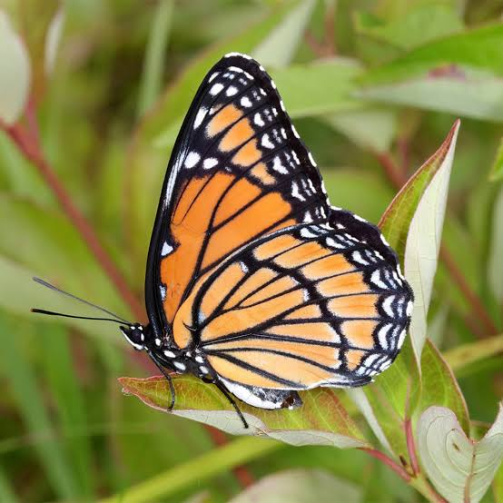
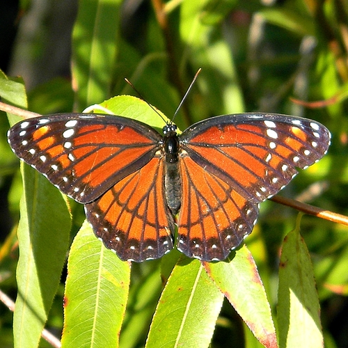

Nombre científico: Limenitis archippus
La mariposa virrey es conocida por su asombroso parecido con la mariposa monarca. Esta imitación es una forma de defensa contra depredadores.
Coloración: Alas anaranjadas con venas negras y una banda negra horizontal en las alas traseras que la distingue de la monarca.
Alimentación: Las orugas se alimentan de árboles como el sauce, el álamo y el cerezo silvestre. Los adultos beben néctar de flores.
Hábitat: Zonas húmedas como pantanos, riberas de ríos y bordes de bosques en América del Norte.
Importancia ecológica: Sirve como ejemplo clásico de mimetismo batesiano y participa en la polinización.

